Schedule · Monthly
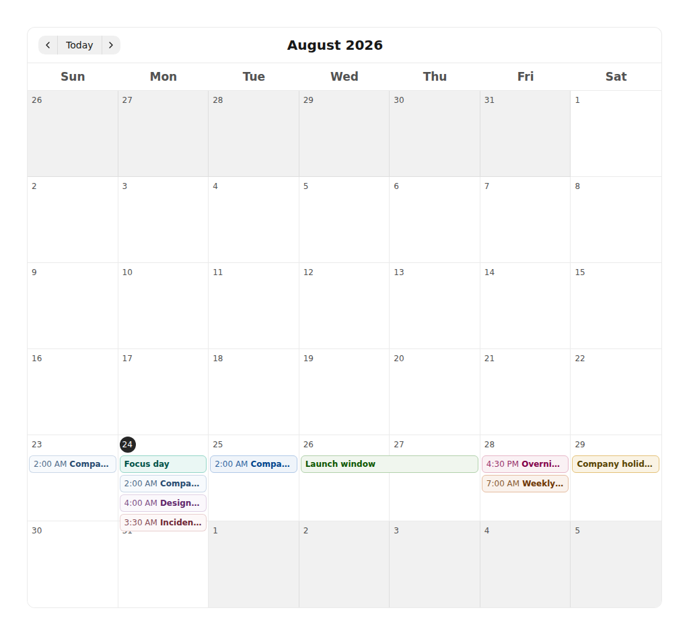

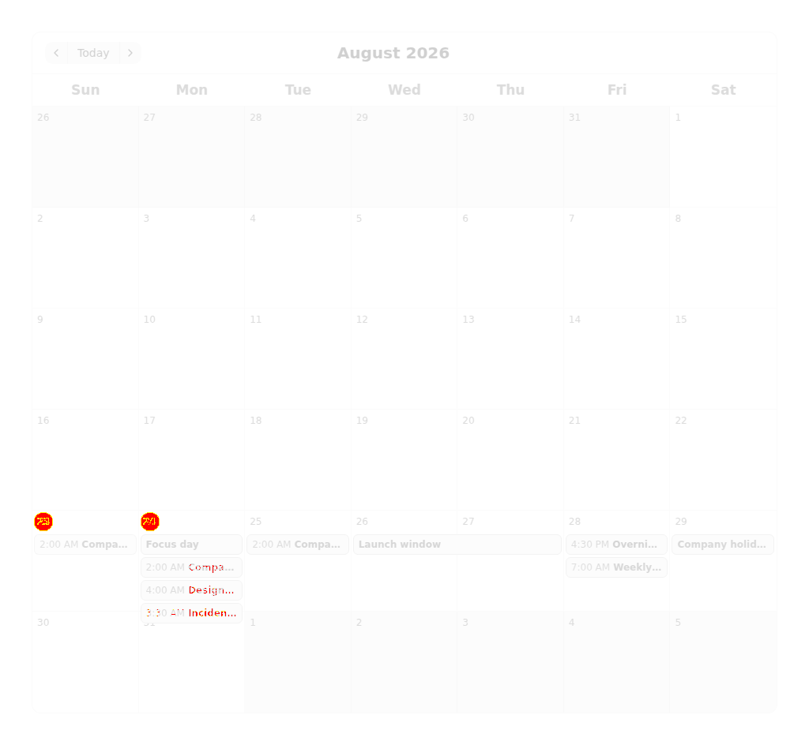
8a055dfb3fe3b64210308acac242f27b89c41969 on linux-arm64 · baseline 674b8b8bb45624d12830f5b78a43bcc4adc29531 · 2026-08-24T15:13:48.705Z
node .github/scripts/visual-gate/gate.mjs accept --keys <key,key> --reason "<why the after is correct>"
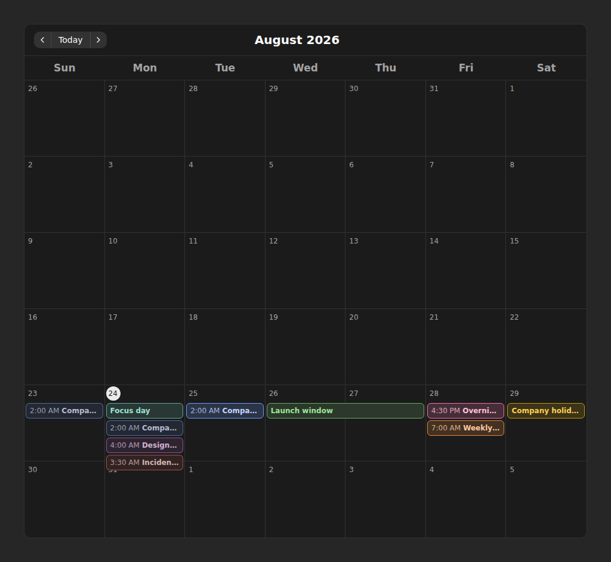
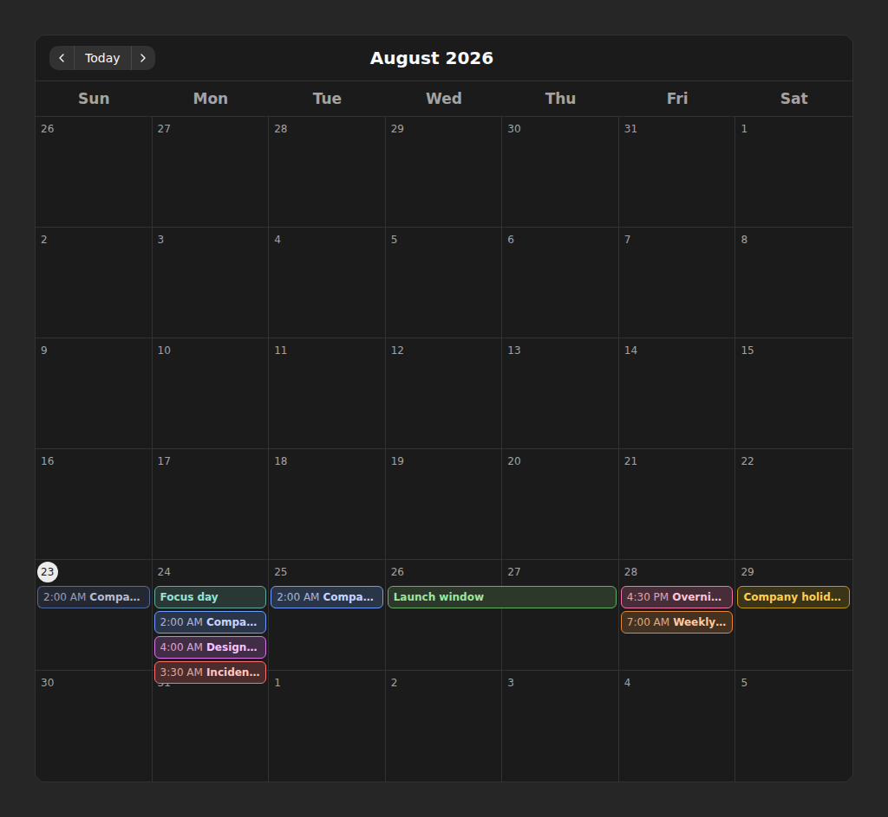
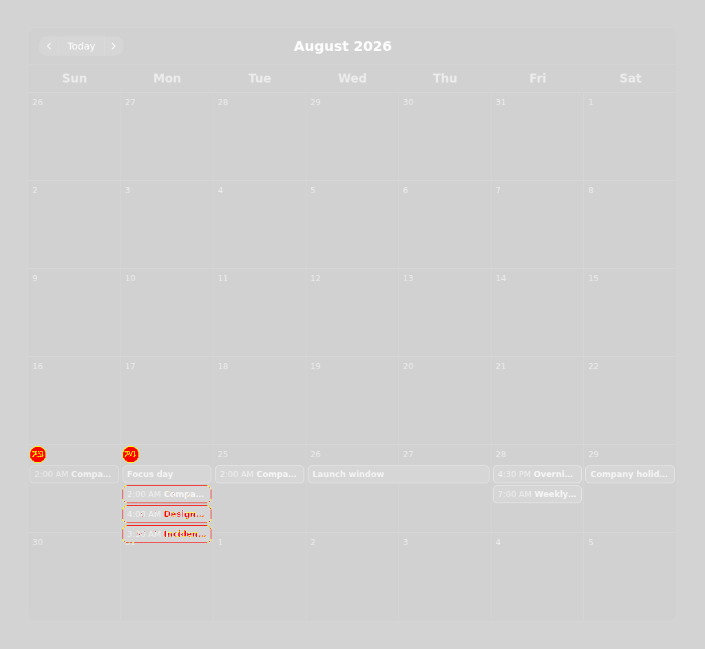
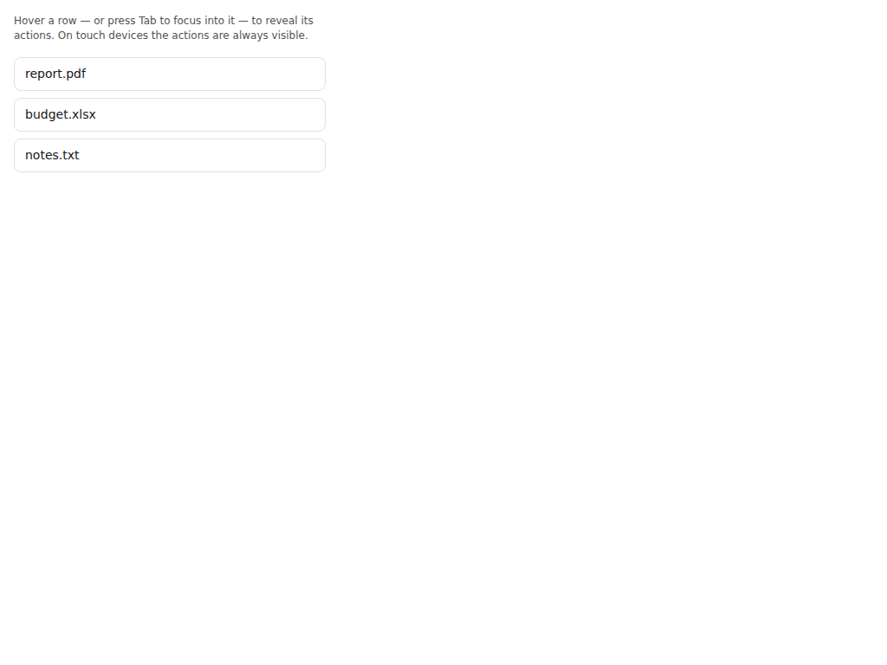
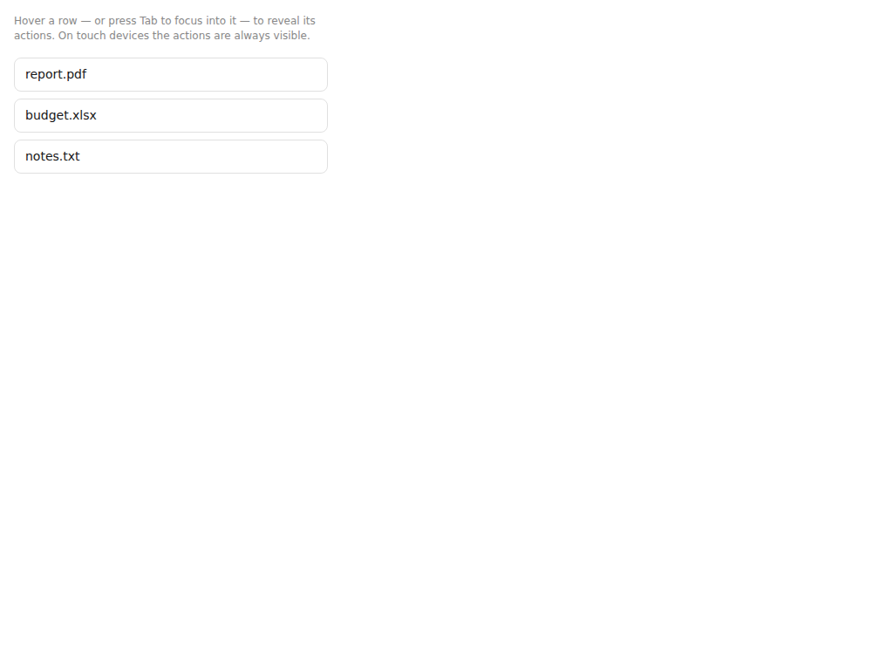
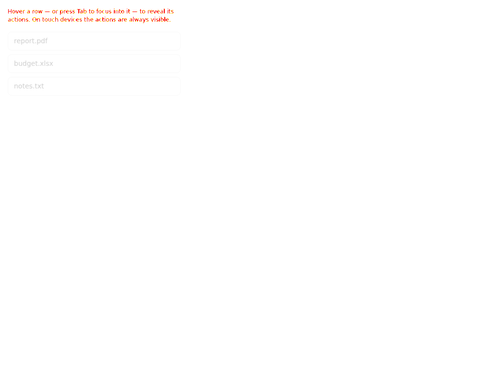


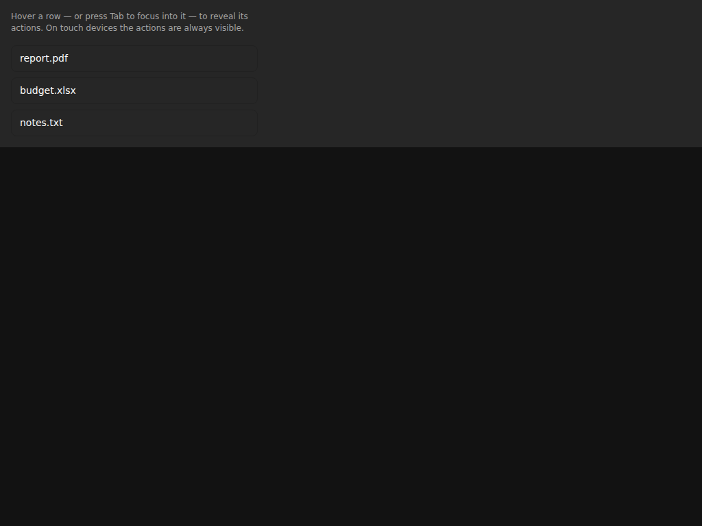
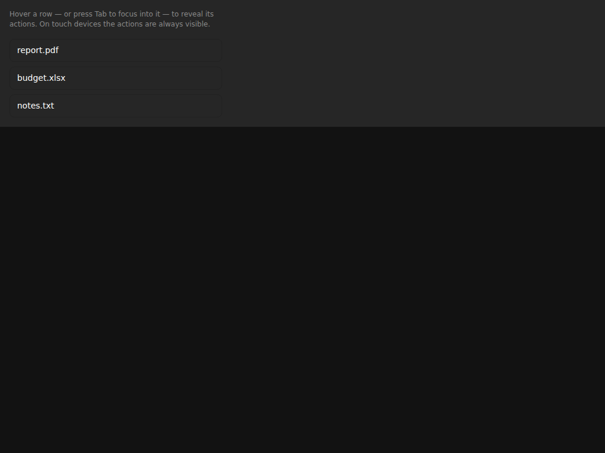
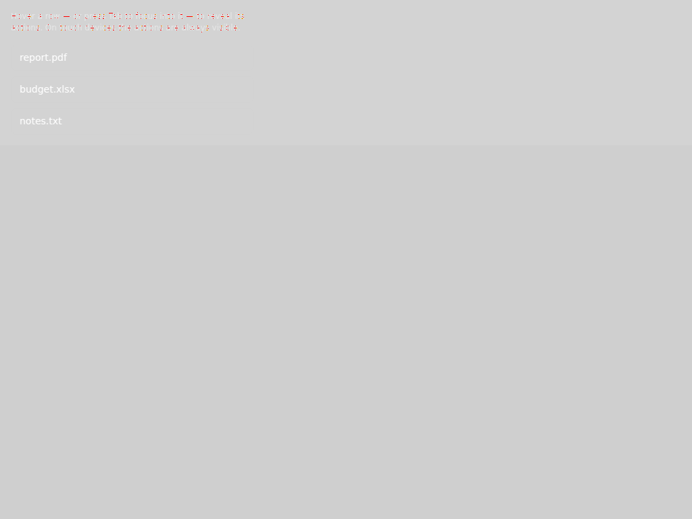
New shots with no baseline to regress against — adopted on the next promotion.
core-layer-dismissal--modal-in-modal__neutral-darkcore-layer-dismissal--modal-in-modal__neutral-lightA theme styles this target, but no shot in this run rendered it. Either the plan cannot reach it, or the component stopped rendering the target the theme aims at.
butter → heading (type:display-1)butter → heading (type:display-2)butter → heading (type:display-3)butter → text (type:display-1)butter → text (type:display-2)butter → text (type:display-3)butter → top-nav-item (selected)butter → card (variant:info)butter → card (variant:success)butter → card (variant:warning)butter → card (variant:error)chocolate → heading (type:display-1)chocolate → heading (type:display-2)chocolate → heading (type:display-3)chocolate → text (type:display-1)chocolate → text (type:display-2)chocolate → text (type:display-3)gothic → heading (type:display-1)gothic → heading (type:display-2)gothic → heading (type:display-3)gothic → text (type:display-1)gothic → text (type:display-2)gothic → text (type:display-3)matcha → heading (type:display-1)matcha → heading (type:display-2)matcha → heading (type:display-3)matcha → text (type:display-1)matcha → text (type:display-2)matcha → text (type:display-3)neutral → heading (type:display-1)neutral → heading (type:display-2)neutral → heading (type:display-3)neutral → text (type:display-1)neutral → text (type:display-2)neutral → text (type:display-3)neutral → badge (variant:gray)stone → heading (type:display-1)stone → heading (type:display-2)stone → heading (type:display-3)stone → text (type:display-1)stone → text (type:display-2)stone → text (type:display-3)y2k → heading (type:display-1)y2k → heading (type:display-2)y2k → heading (type:display-3)y2k → text (type:display-1)y2k → text (type:display-2)y2k → text (type:display-3)y2k → top-nav-item (selected)Documented as themeable, absent from every shot. A coverage gap, not necessarily a bug.
avatar-group-overflowavatar-status-dotavatar-status-dot-glyphbanner-contentbreadcrumb-item-menu-triggerbreadcrumb-menuchat-composer-drawerchat-dictation-buttonchat-system-messagechat-tokenized-textchat-tool-callscollapsible-groupcommand-palette-groupcommand-palette-group-headingcommand-palette-itemdate-input-clear-icondate-range-input-clear-icondate-time-input-time-listboxdate-time-input-time-optiondropdown-menu-dividerdropdown-menu-indicator-icondropdown-menu-radiodropdown-menu-section-headinghovercardinput-clear-buttoninput-clear-iconmarkdown-imagemulti-selector-clear-iconmulti-selector-empty-statemulti-selector-searchmulti-selector-section-headingpagination-dotpagination-input-labelpagination-input-totalprogressbar-markselector-clear-iconselector-empty-stateselector-searchselector-section-headingstack-itemstep-connectortab-menutab-menu-dropdowntab-menu-itemtab-scroll-buttontable-footertimestamp-copy-buttontoasttoggle-button-grouptop-nav-mega-menutop-nav-mega-menu-featured-cardtop-nav-mega-menu-itemtop-nav-menutypeahead-empty-statetypeahead-itemAn astryx-* class in the DOM that no component doc declares as a theming target.
chat-emoji-pickerchat-reaction-barchat-reasoningcircular-progresscircular-progress-fillcircular-progress-trackcodeeditordefault-markerdrawerlist-inputlog-streamrich-text-editorschedulestatsvg-icontransfer-listtransfer-list-collectiontransfer-list-itemtransfer-list-panel